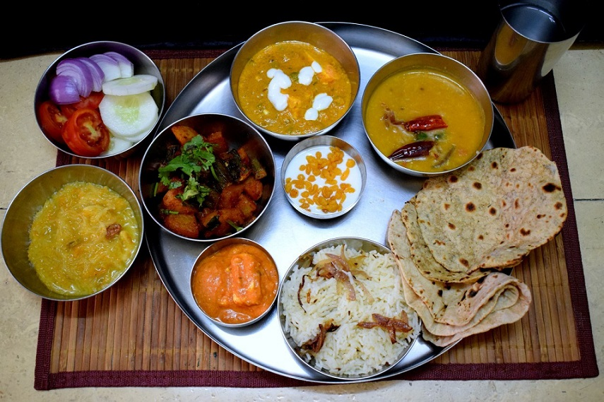
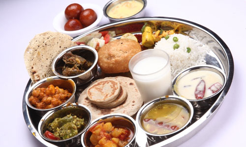
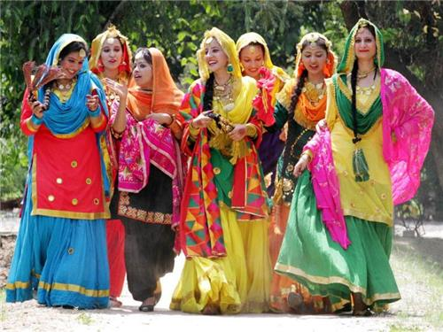
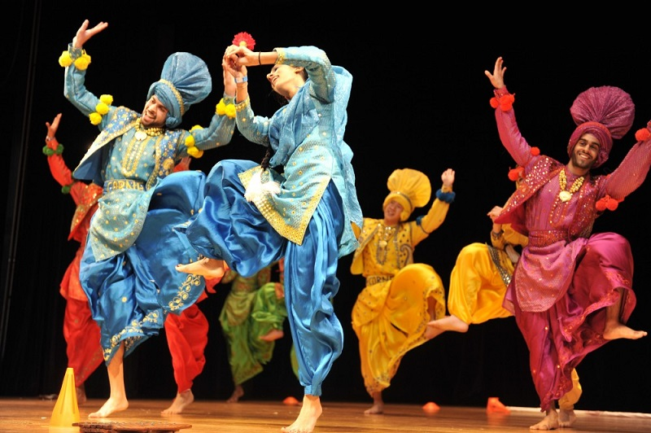
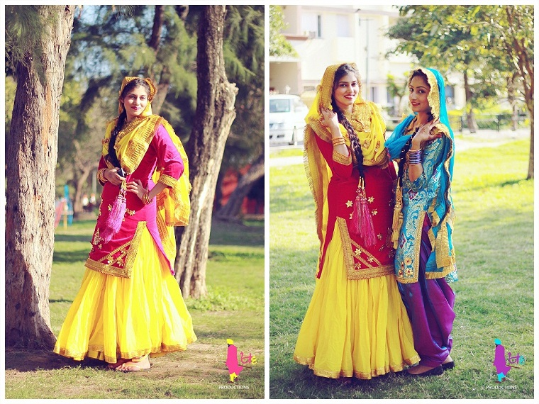
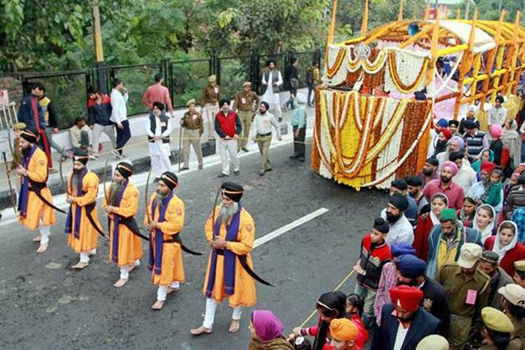
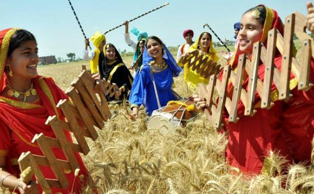
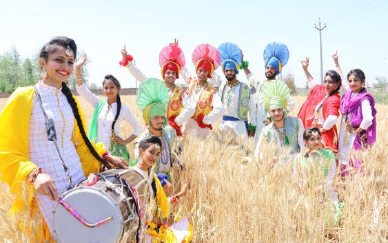
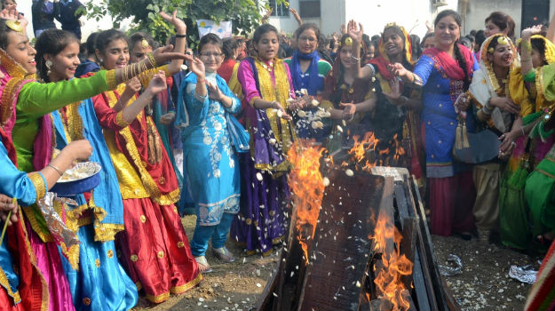

Punjab
- Home
- Food
 
- Fashion
  
- Festival
- Lohri Festival
- Baisakhi
- Guru Nanak Dev

Guru Nanak Dev
India is known for its many hued fairs and festivals that form an integral part of the attraction of India. Each state, race and culture comes up with different fairs and festivals that are different from each other, each with different origin and each has a different way of celebration. The Indian calendar gives you a long list of fairs and festivals- in all corners of the country. Some festivals are famous celebrated by all over India while others are nondescript affairs.
 Baisakhi
In the year 1699, the 10th Guru of the Sikhs, Guru Gobind Singh established the Panth Khalsa or the Order of Pure ones for the Sikhs. The Baisakhi Festival is usually held on that day in Punjab. Punjab is an agricultural Land and the main occupation of the people is agriculture. - Guru Nanak Dev

Lohri Festival
Lohri is a very popular carnival at Punjab and is celebrate with maximum zeal and enthusiasm in the state. Mainly celebrated to mark the departure of the Winter it is synonymous with the Pongal of Tamil Nadu, Sankranti of UP, Bihar and Karnataka, Bhogi of Andra Pradesh and Bihu of Assam. Although it is related with the harvest season and gathering of grains, in Punjab it is celebrated as a matrimonial fete of the newly married couple to strengthen the marital bondage. - Baisakhi
- Lohri Festival